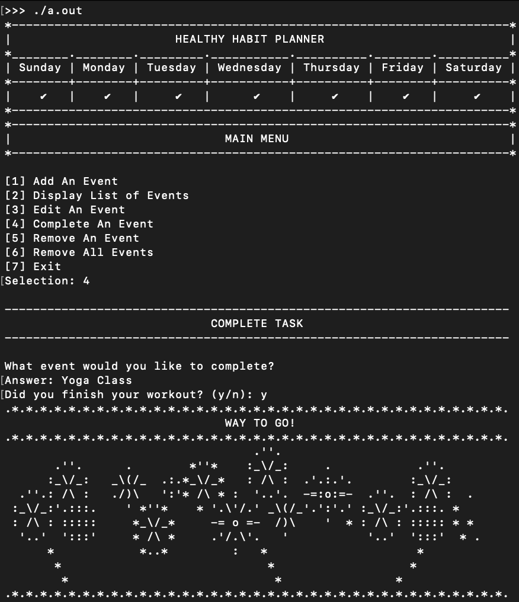
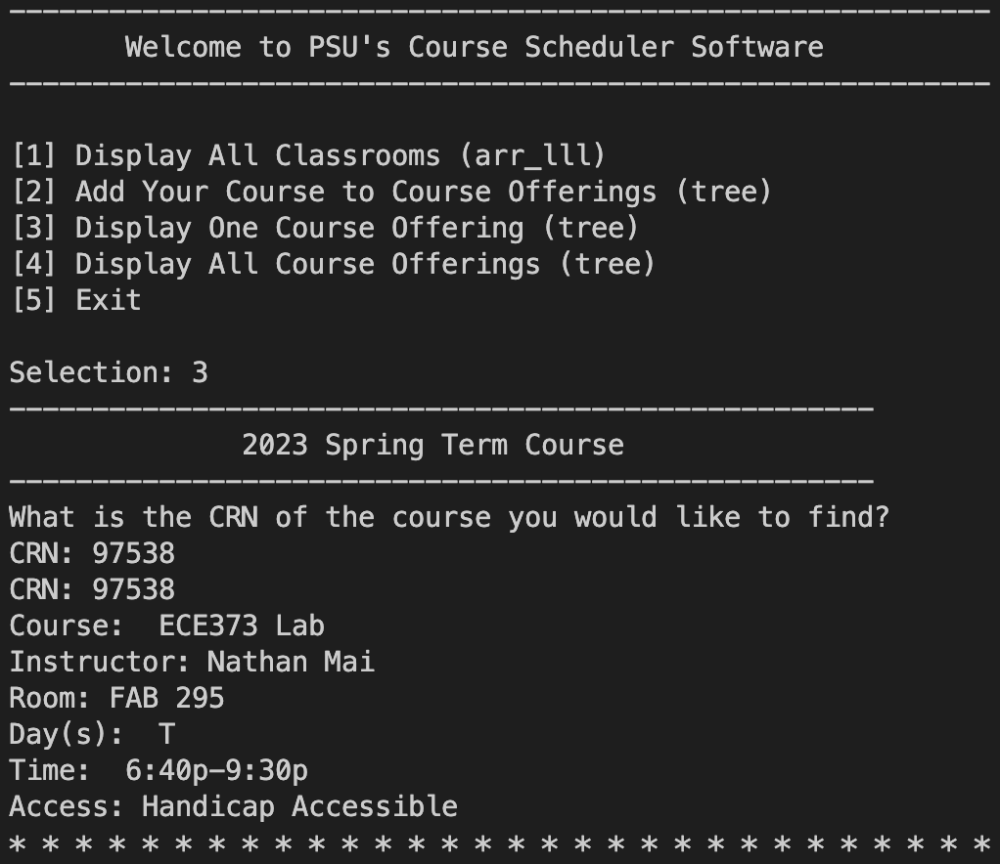

Williamette Valley Garden Planner

Plan your garden with this interactive program designed to build a
custom-sized garden grid where you can play around with your upcoming
garden layout.
This program was built using CSS and HTML5 with the addition of
JavaScript to create an interactive garden plot. Javascript was also
used to create produce items. At any time, you can drag and drop a
produce item into the grid and between squares, as well as, remove an
item with one click. As an item is added to the plot, the instructions
for planting the seedlings can be found appended to a JavaScript list
as a reference.
Health Tracker

Keep track of your goals by scheduling workouts, intermittent fasting,
and nutrition supplements. Make sure to complete your tasks for a
special celebration!
For this program I created I hierarchy of class objects that would be
contained within a Binary Search Tree built from scratch in the C++
programming language. I used generic programming strategies such as
dynamic binding, upcasting, and downcasting within my hierarchy. For
my data structure, I employed unique pointers to manage memory.
Classroom Scheduling System

Get ready for the upcoming term by scheduling classrooms with features
that are accomodated to your specific needs as an instructor. Options
vary from the number of seats available to lab equipment, technology,
and handicap accessibility.
I was tasked to create a classroom scheduling software for a
university using the Python programming language. For the database of
available classrooms, I built an array of linear linked lists as my
data structure. A univeristy instructor or staff member would be able
to input the necessary classroom requirements into the software and
find the appropriate match. Once the match is found, the instructor
would continue to input the details of the upcoming course and
schedule the classroom. The database of scheduled courses could be
found in a 2-3 Tree built from scratch organized by CRN.